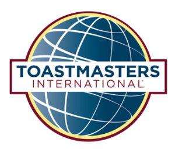

UMGC Power Speakers – Unleashing Stories to Promote Personal and Career Success
The late poet Maya Angelou once said:
'There is no greater agony than bearing an untold story inside you.' The quote prompts me to ask: What’s your story?Perhaps, the question seems simple.Perhaps, someone posed the probing question to you while on a date, while attending a networking event, or during a family gathering.Certainly, as a federal whistleblower and the author of 17 Steps: A Federal Employee’s Guide For Tackling Workplace Discrimination, I’ve often been asked to share my story.Yet, not until I joined Toastmasters International UMGC Power Speakers did I find the way and the confidence to tell it.
Notably, in 2009 I founded the Coalition For Change, Inc.(C4C).The C4C is a civil rights group that provides information and advocacy support to federal workers harmed by workplace race discrimination and retaliation.During the organizations’ early years, I received many invites to speak over the radio and in front of large audiences.I knew what laid on my heart and mind to say.Nevertheless, I simply did not feel at ease speaking.For this reason, I would often let others communicate our group’s mission.Eventually, I grasped to achieve my life’s purpose and to further C4C’s mission I had to find — my voice and tell my story.In short, I came to realize as Dr.Martin Luther King expressed: '
There is an existential moment in your life when you must decide to speak for yourself; nobody else can speak for you.'
In 2016, I joined the UMGC Power Speakers.The UMGC Power Speakersserves as the University of Maryland Global Campus’ chapter of Toastmasters International, a world leader in communication and leadership development.The club provides an encouraging setting for those who want to develop their public speaking skills and gain the confidence to become more effective communicators.
Since joining, I have learned how to share my story with ease.For this reason, I ask:
What’s your story?Are you confidently prepared to tell it? Knowing your story and having the poise to tell it breeds success and satisfaction in life.If you want to learn how to tell your story to engage the hearts, heads, and hands of your audience, I encourage you to join Toastmasters International.If you are a student, a staff member, or an alumnus of UMGC, I invite you to join the UMGC Power Speakers.Whether you want to give a notable toast, nail a presentation, prosper during a job interview, perform onstage, or simply blaze a new trail, the UMGC Power Speakers Toastmasters group is here to support your communication and leadership goals.Our club meets via ZOOM twice a month the first and third Tuesday of the month.
If you would like to stay updated about our club’s future meetings contact us.
[bsa_pro_ad_space id=4]
Posted On: 2020-10-26T00:00:00
Posted By: Tanya Ward Jordan



Content Date: 2020-10-26
Download Date: 2021-07-09
Document ID: L0C04EXJ9